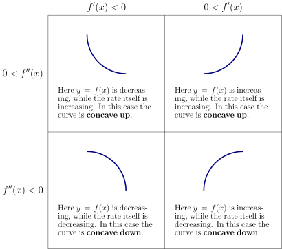
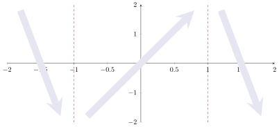
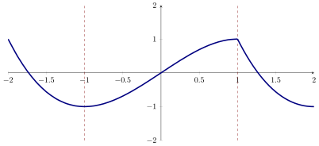
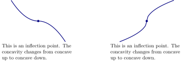
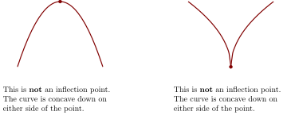
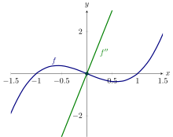
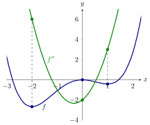

We use second derivatives to help locate extrema.
Concavity
Here we examine what the second derivative tells us about the geometry of
functions.
We know that the sign of the derivative tells us whether a function is increasing or
decreasing at some point. Likewise, the sign of the second derivative tells us whether
is increasing or decreasing at . We summarize the consequences of this idea in the
table below:

If we are trying to understand the shape of the graph of a function, knowing
where it is concave up and concave down helps us to get a more accurate
picture. It is worth summarizing what we have seen already in to a single
theorem.
Test for Concavity Suppose that exists on an interval.
-
(a)
- on that interval whenever is concave up on that interval.
-
(b)
- on that interval whenever is concave down on that interval.
Let be a continuous function and suppose that:
- for .
- for and .
- for and .
- for .
Sketch a possible graph of .
Start by marking where the derivative changes sign and
indicate intervals where is increasing and intervals is decreasing. The function has
a negative derivative from to . This means that is
increasingdecreasing
on this interval. The function has a positive derivative from to . This means that
is
increasingdecreasing
on this interval. Finally, The function has a negative derivative from to . This
means that is
increasingdecreasing
on this interval.

Now we should sketch the concavity:
concave upconcave down
when the second derivative is positive,
concave upconcave down
when the second derivative is negative.
Finally, we can sketch our curve:

Inflection points
If we are trying to understand the shape of the graph of a function, knowing
where it is concave up and concave down helps us to get a more accurate
picture. It is worth summarizing what we have seen already in to a single
theorem.
Test for Concavity Suppose that exists on an interval.
-
(a)
- If on an interval, then is concave up on that interval.
-
(b)
- If on an interval, then is concave down on that interval.
Of particular interest are points at which the concavity changes from up to down or
down to up.
If is continuous and its concavity changes either from up to down or down to up at ,
then has an
inflection point at .
It is instructive to see some examples of inflection points:

It is also instructive to see some nonexamples of inflection points:

We identify inflection points by first finding such that is zero or undefined and then
checking to see whether does in fact go from positive to negative or negative to
positive at these points.
Even if , the point determined by might
not be an inflection point.
Describe the concavity of .
To start, compute the first and second derivative of with respect to , Since , there is
potentially an inflection point at . Using test points, we note the concavity does
change from down to up, hence there is an inflection point at . The curve
is concave down for all and concave up for all , see the graphs of and .

Note that we need to compute and analyze the second derivative to understand
concavity, so we may as well try to use the second derivative test for maxima
and minima. If for some reason this fails we can then try one of the other
tests.
The second derivative test
Recall the first derivative test:
- If to the left of and to the right of , then is a local maximum.
- If to the left of and to the right of , then is a local minimum.
If changes from positive to negative it is decreasing. In this case, might be negative,
and if in fact is negative then is definitely decreasing, so there is a local
maximum at the point in question. On the other hand, if changes from
negative to positive it is increasing. Again, this means that might be positive,
and if in fact is positive then is definitely increasing, so there is a local
minimum at the point in question. We summarize this as the second derivative
test.
Second Derivative Test Suppose that is continuous on an open interval and that for
some value of in that interval.
- If , then has a local maximum at .
- If , then has a local minimum at .
- If , then the test is inconclusive. In this case, may or may not have a local
extremum at .
The second derivative test is often the easiest way to identify local maximum and
minimum points. Sometimes the test fails and sometimes the second derivative is
quite difficult to evaluate. In such cases we must fall back on one of the previous
tests.
Once again, consider the function Use the second derivative test, to locate the local
extrema of .
Start by computing Using the same technique as we used before, we find that Now
we’ll attempt to use the second derivative test, Hence we see that has a local
minimum at , a local maximum at , and a local minimum at , see below for a plot of
and :

If , what does the second derivative test tell us?
The function has a local extrema at
. The function does not have a local extrema at . It gives no information on whether
is a local extremum.
 Finally, we can sketch our curve:
Finally, we can sketch our curve: